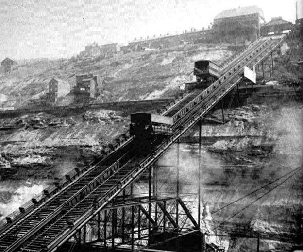

The Duquesne Incline is one of those which follows very closely the tracks of an early coal hoist. Old newspapers indicate the existence of such a conveyance as early as 1854. Residents apparently referred to it as "Kirk Lewis' incline" and located it on the present site of The Duquesne Incline's Upper Station. Grandview Avenue was then the High Street, and the area was just beginning to be converted from farmland to homesites. This pleasantly-situated acreage was an excellent area to absorb some of the expanding population of the city, but the problem of easy access was still to be solved.
Although plans for a freight and passenger incline are known to have existed much earlier, financial backing was exceedingly hard to find—even the modest sum of $47,000—and actual construction was delayed. Eventually, of course, difficulties were overcome and the Incline was built. It was opened to the public May 20, 1877. The Duquesne Incline was the first Pittsburgh incline designed and built by Samuel Diescher, for Kirk Bigham and Associates. Mr. Diescher, an engineer, had become the country's foremost builder of inclines. He was also to design and build most of those that followed.
At the time of its public opening, it was one of four inclined planes serving the summit of Coal Hill, which later came to be known as Mount Washington. The Duquesne Incline was operated, from 1877 until 1962 by The Duquesne Inclined Plane Company. From 1964 until the present, the Incline has been operated by the Society for the Preservation of The Duquesne Heights Incline; it has been owned by the Port Authority of Allegheny County.
